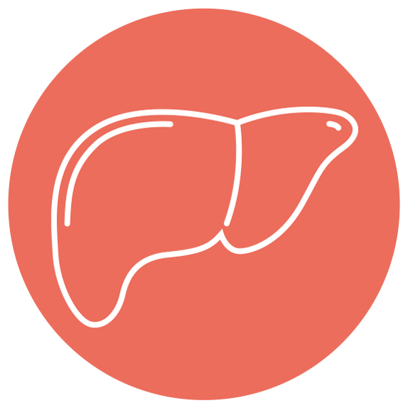

For your Dog
당신의 강아지를 위하여
당신의 강아지에게 충분한 영양을 주고 있나요?
강아지는 사람보다 노화가 빨리 찾아오기 때문에
강아지가 건강하게 나이들 수 있도록, 각종 질환으로
고통받지 않도록 예방이 필요합니다.
이 웹사이트는
강아지가 거의 평생 섭취해야 하는 영양소와 질환에 따라 섭취해야 하는 영양소,
노화로 인해 채워주어야 하는 영양소에 대해 다루고 있습니다.

간 질환

관절 질환
안과 질환

노령
전 연령
bookmark
이 사이트에서 제공하는 정보는
페피테일
강아지 나이별 추천 영양제_예은동물병원
강아지 안구질환에 좋은 커큐민 영양제에 대해_예은동물병원
수의사가 추천하는 강아지 관절영양제_예은동물병원
노령견에게 도움되는 항산화 영양제에 대해_예은동물병원
강아지 영양제 종류, 딱 7가지만 기억하세요!_달콤펫
강아지 나이별 간식_더마퍼시
강아지, 고양이 간영양제 총정리_박박사의 강아지 건강상식